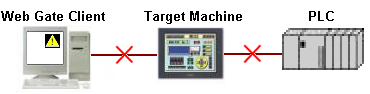
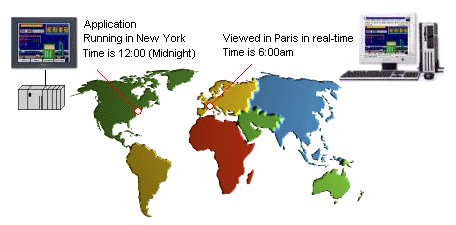
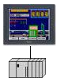
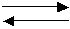

|
|
|
|
|
|
|
|
This section explains special Web Gate and Web Server behavior:
A target machine server can support up to eight Web Gate client connections at once.
A Web Gate client can connect to eight target machine servers at once. Be aware that client cannot connect to the same target machine server more than once.

The performance of the panel and the client connections may be affected by the number of connections, the complexity of the project, and the amount of data being transferred from the panel to each client. Limit the number of connections to achieve better Web Gate performance.
Web Gate supports the 32-bit version of Internet Explorer. It does not support the 64-bit version of Internet Explorer.
When using Web Gate to connect to the target machine, the firewall that the connection goes through may block some files that Web Gate needs to operate. The following file types are necessary for a Web Gate connection and cannot be blocked:
.I
.i
.cfg
.bin
.dlm
.dll
.bin
.exe
.uni
.fnt
.txt
When you enable Web Gate, you automatically enable the data-sharing feature. See Section 22.1, Sharing Data Between Tablets, Smartphones, and Target Machines for more information.

Web Gate uses one Data Sharing connection. The number of clients that can connect to a target at the same time depends on the number of Data Sharing connections available. For example, if a target supports eight Data Sharing connections and two connections are in use, only six clients can connect to the target.
The size of each panel in a project should be less that 64 KB. A warning will display in the Feedback Zone when you build a project that has panels whose size exceeds 64 KB. A panel may not properly display on a Web Gate client if the panel's size exceeds 64 KB.
To reduce panel size:
Reduce the number of objects on the panel.
Reduce the number of variables used by the panel.
On the client PC, when there is a communication error, the data quality icon can appear on objects that display the value of external variables. The icon indicates the data is unreliable.

There are two reasons why data might be unreliable:
Connection between the Web Gate client and Target Machine. The data quality icon displays on the Web Gate client if there is a problem with the network connection between the client and target machine. The data may be valid on the target machine, but not visible on the Web Gate client.
Connection between the Target Machine and equipment. The data quality icon displays on the target machine AND the Web Gate client if there is a problem with the connection between the target machine and equipment. The data may be valid on the equipment, but not visible on the target machine or the Web Gate client.
For more information about data quality, see Section 25.8, Checking the Integrity of Variable Values.
When client PCs connect to the target machine, the processing speed on the target machine may be slowed when displaying popup windows or changing panels.
When viewing projects using Web Gate, the date and time is converted to the Time Zone from where you are viewing the application.

For example, if the target machine is running in New York (January 1, 0:00:00), and you use Web Gate from Paris to view the target machine, the date/time displays as January 1, 6:00:00. For more information, see Section 4.5.3, Displaying Data Using Time Zone and Configuring Daylight Saving Time.
The Time column in Event Summary displays target machine's server time converted to the local time zone from where you are viewing the application.
Event Messages with dynamic time stamps show the local time of the machine that triggered the event. For more information on dynamic time stamps, see section 21.1.5.12, Setting Up Messages with Dynamic Content.
Trend graphs viewed from Web Gate may not exactly match the trend graph on the target machine. Factors such as network traffic and the target machine's CPU load can alter the exact moment when the Web Gate client receives and displays the trend data.
A Parison Graph viewed from Web Gate may not exactly match the Parison Graph on the target machine. An update of a recipe on the target machine may not update the recipe cache image on Web Gate. You may need to perform a Snapshot or Save.
When you use Web Gate to change the value of external variables whose data exists on external equipment, the write and read operation may not perform as expected.
For example, when using scripts to run a write operation, reading data from the equipment does not run properly. You may need to either reduce the frequency if it’s a periodic script, or separate the write operations into multiple scripts to split up the data.
To write values to a data display on Web Gate when target security is set to enabled, you need to add a login part to use with Web Gate. The read/write setting for Web Gate is set on a security group, so you need to log on as a user assigned to the read/write group.
Web Gate Synchronization and the exclusive input feature may come into conflict. This occurs when synchronization is enabled and the connected target displays a panel with exclusive input. In this case, Web Gate displays an error message and shows the target's initial panel.
For information on exclusive input, see Section 22.2, Setting Up Exclusive Input Relationships.
For information on Web Gate synchronization, see Section 23.2.8, Web Gate Operations: Synchronizing Web Gate with a Target.
On Web Gate, a panel operator can view an assembly of objects that use a reference variable. When sharing is enabled on all the parameter variables for the reference variable, the Web Gate client can view exactly the same display as the target machine server. The target machine server and Web Gate client can make changes to a parameter and the most recent change will be displayed. When sharing is set to None, the Web Gate client and the target machine server would view their own copies of the parameter variables.
When sharing is set to None for a parameter variable and Shared for another parameter variable in a reference string, then part of the view will be independent and part will be shared. For example, for the Reference String Plant%s.Station%d, the parameter variable PlantName is Shared and StationNumber is set to None. In this case, the operators on the Web Gate client and the target machine server would be able to make changes to and view the same updated plant data, but they would each view and make updates to their own copies of station data.
When clearSum() executes from the Web Gate client, only the client's Sum counter resets to 0. The Sum counter on the target does not reset.
For more information, see Section 18.3.8.1, Alarm Group/Category Methods: clearSum.
Recipes on the target machine server can be viewed and modified by the Web Gate client. However, changes must be saved to the server where the actual data is stored. When sending recipe data to the PLC from the client machine, the data is downloaded to the PLC without saving to the target machine server. When taking a snapshot of the recipe data on the PLC, the data is uploaded to the client machine without saving to the target machine server. For more information, see Section 17.6.8, Sharing Recipes Using Web Gate.
Target Server |
|
Web Gate Client |
 |
Load Recipe  |
|
PLC |
|
|
Web Gate clients can view block trend graph data on the target machine server. To do this, the block variable assigned for the block trend graph must have Sharing set to Read Only or Read/Write.
Web Gate clients can use the trigger to get the latest value of the block variable, only if the trigger variable has Sharing set to Read/Write.
You can set up the print form operation to work remotely through Web Gate, only if you use the print form action triggered by a shared variable. The print form operation will not support Web Gate if you use other triggers, such as switches or selectors.
You cannot directly access system variables on Web Gate. However, you can indirectly access system variables by using the Read From Variable and Write To Variable properties.
The Toolchest security parts for modifying user account information, such as UserManager and PasswordChange, are not supported on Web Gate.
Alarm Summary cursor-related operations such as cursor up/down, page up/down, move top/bottom that are run on the target machine are not reflected on the Web Gate client.
In run time, Alarm Banner moves to the back when an error message box appears. But in Web Gate, the Alarm Banner does not change position when an error message box appears.
The Alarm Trigger action is not supported on Web Gate for the following functions:
Bit
Special
Popup Panel
Script.
The following Operations are not supported on the Web Gate client
Operation |
Supported/Not Supported |
All system operations are supported except the following: |
|
Not Supported |
|
Not Supported |
|
Not Supported |
|
Not Supported |
|
Not Supported |
|
Not Supported |
|
Not Supported |
Some script methods are not supported on the Web Gate client. The following table lists the supported and unsupported script methods.
Method Type |
Supported/Not Supported |
All Methods Supported |
|
All Methods Supported |
|
All Methods Supported |
|
All Methods Supported |
|
All Methods Supported |
|
All Methods Supported except for the following methods: |
|
All Methods Supported except for the following methods: |
|
Not Supported |
|
Not Supported |
|
Supported |
|
Not Supported |
|
All Methods Supported except for the following method: |
Actions that run On Shutdown are not supported.
Strings that use a font that is not installed on the client PC may appear different from the target machine. Strings are displayed with the closest matching font that is available on the Web Gate client.
Popup windows on the Web Gate client always show a titlebar even though the target machine may not use a titlebar.
The Video Display is not supported on Web Gate.
Printing is not available on the Web Gate client.
The web browser's Back, Forward, and Refresh buttons are not supported with Web Gate. Using these buttons may cause errors during run time.
Function Key operations assigned to Function Keys on the target can be executed from a client's PC Keyboard through Web Gate, see Section 25.3.4 Simulating the Keyboard for information on how the Function Keys map to a PC Keyboard. The following Function Keys on the PC Keyboard will not run Function Key operations on the target machine:
F1 - Displays Web Browser Help
F5 - Refreshes Screen
F11 - Displays Full Screen
Alt + F4 - Closes current window
Ctrl + F4 - Closes current tab
After you download the project to a target, start Runtime, and connect to Web Gate, the following parameters display differently on Web Gate and in Runtime:
Parameter |
Web Gate Displays |
Runtime Displays |
IP Address 1 |
Current Web Gate PC's IP Address 1 |
Target machine's IP Address 1 |
IP Address 2 |
Current Web Gate PC's IP Address 2 |
Target machine's IP Address 2 |
MAC Address 1 |
Current Web Gate PC's MAC Address 1 |
Target machine's MAC Address 1 |
MAC Address 2 |
Current Web Gate PC's MAC Address 2 |
Target machine's MAC Address 2 |
DNS Address 1 |
Current Web Gate PC's DNS Address 1 |
Target machine's DNS Address 1 |
Subnet Mask |
Current Web Gate PC's Subnet Mask |
Target machine's Subnet Mask |
Default Gateway |
Current Web Gate PC's default gateway |
Target machine's default gateway |
Target Type |
WinNT 4.0 |
Target type |
DRAM Usage |
Current Web Gate PC's DRAM usage |
Target machine's DRAM usage |
When using Web Gate, while the Web Gate client and the target machine server would be viewing the same file on the SoMachine Log Viewer, the file content may not be the same. The switch allows each user on the Web Gate client and target machine server to reload the file independently. For example, if an operator on the Web Gate client triggers a reload while an operator on the target machine server does not, only the Web Gate client will display the most up-to-date file.
The Web Gate client may at times close or open an HTTP connection to target's Web Server. This is recorded as a Web Server Login or Web Server Logout system event. This is normal in the course of the target's Web Server Operations and does not affect Web Gate performance.
Web Gate copies the image files from the target machine server to the Web Gate client when the panel opens. The Web Gate client then reads the image files from its local drive. New images that are subsequently added onto the server would not be copied to the client. To display any new images from the server to the client, you need to change panel. When the panel opens, the new image files are copied from the server to the client.